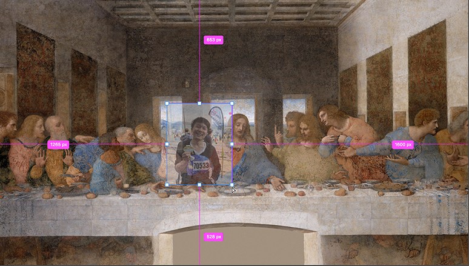

一块屏幕价值几何？如果它是互动的呢？
如果它不仅能体验还值得拍照发票圈呢？
这是一个关于酷栈科技的业务的介绍，也是一篇酷栈从自己互动体验专业出发作出的行业概览——关于业内互动屏幕类型产品的相关设计的概览。各位尊敬的客户也大可把这个当作互动装置的选型指南:)
互动创意科技的普及和体验式经济的热潮。
打卡晒照发微博票圈，不管是吃的喝的玩儿的用的，如果不够格走这个“仪式”，那最多只算是满足了生存需求而不是生活追求。今天的消费逻辑里，似乎只有值得传播和供其他人隔着屏幕观赏的体验才是颜值正义，体验式经济热潮也从这里开始。而其背后，尤其在艺术、设计和空间的维度，常见的一些内容和形式是什么？如何算是体验式？体验如何个性化，或者说个性化体验的可能性有哪些？在我和“酷栈”的眼里，答案就是数字和互动的——或者传统空间营造口中的带声光电的——“一切”。
尺度依次递增的几类互动屏幕。
这里用“一切”说得太夸张，显示屏幕（包括投影）作为数字世界之于物理世界的最常见的信息输出的窗口，我先从屏幕出发，并以实现的维度上的尺度递增为引线，做一个简单整理和定义：
1) 会动的画，交互的“镜子”和虚拟的“窗户”；
Interactive Portrait/Mirror/Window;
2) 互动数字墙、地板和天花板；和
Interactive and Digital Wall, Floor and Ceiling; and
3)（交互的）沉浸体验空间：沉浸式展厅和沉浸式展览。
(Interactive) Immersive Space：Immersive Exhibition and Rooms;
1a) 最小空间尺度之会动的画。
这是最小的尺度，意味着从场景来说它可以挂在房间、走廊或者任何一个能容纳下一面镜子、一幅画或者一扇窗户的空间里。当然，要留有合理尺寸的空间去让互动行为发生。
酷栈现在正在做的两个装置或者说两块屏幕， 一个叫“听古画在唱歌”，逻辑很简单一个是画里面的人动起来了，或者也叫被人工智能复活过来了，因为我们用的是AI的技术去将（古）画里面的人复活成现代人模样比如“乾隆”，然后这个现代人模样的“乾隆”会开始和你唠嗑，当然我们也可以让他唱歌，我们的“乾隆”我们做主。并且我们几乎可以复活任何时空的任何一位有肖像的人物，虚拟的人物比如“林黛玉”也可以。
当然我们目的不只是做出一段视频，而是为了做出互动的体验，最好是可以打卡发朋友圈的那种。比如我们给东钱湖宋氏美学馆我们做了一个互动走廊的方案，走廊上挂着几幅画，几幅伪装成画的样子的屏幕：
正常情况下,这几块屏幕只是会安安静静依靠它们的高清屏幕和外框设计几乎伪装成一幅幅画。但是如果你不是匆匆走过，而是驻足观赏，好玩儿的故事就此发生。古画先是会活过来，然后开始给你唱歌或者唠嗑。具体干什么，只要脑洞能开，我们就可以去做，基本版的一个交互逻辑大概这样：
或者我们可以脑洞更大一些，比如标题是《人工智能复活了林黛玉，又复活了苏东坡，紧跟着武则天也来了，他们居然还聊上了》：
林黛玉：好好吃饭，像我这样容易被风吹倒
武大郎：对对对，来一个烧饼吗？
苏东坡：配上我的东坡肉，妙极了！
李白：东坡肉？给本大人配上一壶酒！
李清照：知否知否，应是绿肥红瘦。
杜甫：太白兄，仰慕你已久，能饮一杯无？
汪伦：不能，太白兄早与我有约了。
妲己：什么样的约定都比不上纣王对本妃的宠爱。
钟馗：妖精，哪里逃！
武则天：宠爱？你把朕放于何地？
李治：媚娘，生生世世我都钟情于你。
唐太宗（李世民）：逆子！她可是差点把李家江山丢了的人！
李煜：我对不住李氏列祖列宗，我真把李家江山丢了。
赵匡胤：哈哈，江山在我手里，成王败寇，你现在还不是被我随叫随到？略略略～
曹操：咩啊？别抢我的梗，天下人都知道我曹操，随叫随到！
如果这么些个大咖们都复活了，我们大概需要一个展厅才装得下。空间上可能就不是一个走廊了而得是一个画廊，一个装满了会聊天儿的古画的画廊。然后故事和脚本是我们可以编的，这个点状的装置形式如果通过故事结成网状的空间结构，可以构建的内容和体验以及背后能带来的话题和流量，大可期待。有个最重要的点，如果不考量算法的投入和成本，这里的制作由于使用的是我们的人工智能技术，边际成本相对于传统CG制作要经济并且也可以更快速。
用新的科技去盘活传统的文化，用互动的体验去重新呈现静态的艺术，天生就有着传播的热点。而且更重要的是它是个新奇的体验，可以打卡、可以发朋友圈。这个逻辑更早的时候已经被故宫验证，而且是故宫出圈操作的第一个胜利 - “萌萌哒的雍正”系列。都是走让画里面的人“活”过来或者从画里“走出来”的逻辑，只是酷栈的《听古画在唱歌》更进一步地让它和物理世界里的我们产生互动进而强化体验。
“萌萌哒的雍正”系列，2015。 故宫文创
“萌萌哒的雍正”系列，2015。 故宫文创
酷栈在另外一个在尝试中的装置是把互动行为反过来 —— 让人能“走”到画里面去。之前我有个给腾讯X上海博物馆做的项目，一个交互软件，叫《不知侬是画中人》，“和人工智能来场捉迷藏”，人工智能把你的自拍藏到文物、画或者其他任何照片里。当然不是直接PS进去，而是依靠一个人工智能算法改变自拍图的风格再融合到目标图-文物图片中，原来的版本是个APP：
“Fusion Beauty”系列，2019。 周乐
现在我们打算把它做成一个空间装置，升级版的人工智能的算法还在成型中，大致的可能交互逻辑可以先解释一下。比如爱德华·蒙克的《呐喊》，你站在屏幕或者说画的前面，一个剪刀手下来，主人公彷徨扭曲的脸的后方将有一个乐呵呵的你：

比如冲哥喜欢的“萧何月下骑自行车追韩信” -- 现场一块大屏幕前摆台自行车。观众坐在自行车前咔嚓拍照一张，人工智能自动抠图自动融合，还你一张月下骑自行车追韩信的合成画。当然也可以是追别人，坐在前面那台自行车上你的女朋友或者谁谁都可以。
再或者《最后的晚餐》加一位第十三门徒？抑或是，人工智能邀请你和乾隆自拍，乾隆和他太太的自拍照突然多出了一个你？穿越水墨画已经火过一波了，但酷栈的《不知侬是画中人》是让你穿越去水墨画。一边互动体验，一边给你张趣图发票圈。一张可以让屏幕前的朋友们观赏的自拍，几乎是一定要票圈分享的。

在会动的画这个维度上，穿越来来去去是我们做的一波事情。另一个我们在尝试的形式我称之为“缝合数字和物理现实”。是受到Neil Mendoza的《MECHANICAL MASTERPIECES, 2020》启发，这个形式因为不涉及人工智能算法的研发，逻辑上讲会更容易可控一些。通过物理的附加装置，画可以和人互动起来，同时也是画里面的那个虚拟世界和观众在的这个现实世界互动了起来。有趣或者神奇的体验也来源于这两个是世界的互动。
MECHANICAL MASTERPIECES, 2020. Neil Mendoza (http://www.neilmendoza.com/).
这么一组会动的画里，观众可以去戳画中人或者物，也可以控制画面里的灯的开关等等。画中的虚拟世界和现实世界开始互动，把不可能变得可能，现实中的观众自然玩得不亦乐乎。
比如给画框（屏幕）装上两个打气筒，并驱动一个实时的烟雾飘散的粒子；观众哼次哼次地往山水画里打气的时候，吹散氤氲一片。
1b) 最小空间尺度之交互的“镜子”。
“交互的镜子”是我们给一大类基于屏幕和摄像头交互装置的总称。在“交互镜子”类的装置中，人的影像会实时投射到屏幕中，就像镜子一样，但也远不止如此。实时数字生成的视觉内容也将呈现在“镜子”屏幕上，其呈现方式既可以是叠加在实时图像上，也可以是完全替代实时图像。这里的数字生成视觉内容，可以简单、也可以复杂，既能是抽象的几何图形，也可以是具象的形象设计。
“现实”叠加“数字内容”的版本，这里我给两个例子：一个是最近某文旅公众号上分享过的案例 - The Year‘s Midnight，2011; 一个是我2017年为学校的毕业展览做的一个互动装置，后来也在2019年我自己的一个展览上复用了一次。先说《The Year‘s Midnight》，抛却艺术家Rafael Lozano-Hemmer关于基督宗教信仰和传输的思考和探讨不谈，只看其交互形式和内容。参与者会像照镜子一样看到自己的影相出现在屏幕里，如果眼睛盯着屏幕看上更久一些时间，屏幕中的你就会双眼冒烟直至烟雾充满整个屏幕。
The Year’s Midnight (London)， Rafael Lozano-Hemmer 2011 - 2017.
这个“交互镜子”的形式就像我们归纳的那样属于数字生成内容+现实的叠加，值得指出的是这里的数字内容可以根据项目本身的需求、在合理考虑技术可行性和成本的前提下，去相对自由地定义。当它是一个独立的艺术装置的时候，艺术拥有的高度创作自由允许去做任意的表达并且专注于内容视觉本身。而当我们把它看待成一个设计作品的时候，它的数字内容设计也可以由需要转达的信息和需要表达意图去指导内容和形式。
我们要介绍的另一个数字生成内容和现实叠加的“交互镜子”项目是《The Spirit of Shanshui, 2017》。观众出现在屏幕前，“镜子”里的你的头上就会开始蹦出各种几何体，就像是你的思绪开始不受控制地开始实体化并从你脑袋里蹦出来，空中反转飞舞并最终落到“地面”上。落到地上后还不忘反弹起来再蹦几下，才逐渐消停、静止乃至消失。
The Spirit of Shanshui，2017。周乐
类似地，这里的生成的内容也可以根据需求相对容易的去重新设计，例如面对一个交互橱窗设计，这里的蹦出的几何体大可以是唇膏或者iphone，看橱窗卖什么或者消费者想要什么。亦或是一个反过来的交互行为，我们让观众更像在玩游戏、在屏幕里接住那些蹦出的物体，那些根据主题需求设计的物体。差不多这个形式：
在Blow Factory为宝马之夜做的这个“交互镜子”项目中，这些字母像方块一样“受重力影响”坠落，而屏幕前的观众的剪影投射到镜子中可以挡住或者接住这些字母方块。
纯数字生成内容的版本，这里我也给两个例子。一个以很抽象的几何呈现，把参与者投射到屏幕中变成个火柴人儿；一个很具象地让每个参与者在镜子中看到自己张开天使的翅膀。
EGO, Interactive Installation, 2015. Klaus Obermaier with Stefano D'Alessio & Martina Menegon.
这个火柴人的视觉呈现貌似简单，但实际这个骨骼都被赋予了像弹簧绳一样的物理特效，才会有如此Q的动效。而Chris Milk很早在2013年做的这个“交互的镜子”旨在帮助观众“实现自由飞翔的互动装置”，由三块巨大的白色屏幕和屏幕前的一处静水面组成，参与者站在水景前的区域，可以通过红外感应探测器，完成不同阶段的“飞翔”互动体验。
The Treachery Of Sanctuary, 2013. Chris Milk.
还有一种按定义应该算是抽象的投射和替代，但是在数字艺术领域，是比较典型的一个门类和处理方式，即用动作捕捉控制和驱动的生成视觉（Generative Visual）。这列装置中常用粒子系统（particle system）表达的强烈的艺术视觉特征。比如将屏幕前的观众投射成由粒子系统生成的“神奇四侠”（Fantastic Four）。
Quantum Space，2015. Sodazot (Igor Tatarnikov), kuflex.com.
这类互动镜子类装置，观众在屏幕前的参与就像一个视觉游戏。每一个动作都被实时的代码程序翻译成绚烂的视觉，而屏幕上的效果又会从视觉维度刺激观众更多的参与，从而构成游戏式的交互体验。当然，除了抽象的纯粹视觉效果以外，以字母和文字结合也是一个常见的“交互镜子”形式。例如：
In Order to Control, 2012. Burak Gölge.
这里观众在屏幕前的动作被代码程序实时翻译成文字形象，在合适的主体下通过变化制定的文字内容也很容易构建不同体验。
最近我还在构思一个几乎零成本的这个“互动镜子”，不要屏幕、不要摄像头捕捉、不要代码，也不要设计。如果我们要的是一个抽象视觉的呈现的“互动镜子”，这将是一个超低成本装置，效果大概类似这样：
其实后面这几个例子的尺度已经超出了一面镜子，而更接近于一面墙。这也就指向了我们最开头定义的第二种尺度：互动数字墙、地板和天花板。在进入关于互动数字墙、地板和天花板的具体介绍之前，关于酷栈在一幅画、一块镜子，乃至大一些、稍稍拓展到一片墙这个尺度上能做什么，我们做一个总结。
酷栈的“会动的画”和“交互的镜子”。
首先，从可行性上讲，这里提到的项目酷栈都能做，和任何其他设计一样，质量和投入直接挂钩。1a）会动的画中的三种形式将是酷栈的原创交互形式；1b)交互镜子的“套路”至少在国际上（国内也在逐步普及）是已经很常用和常见的交互方式。“交互镜子”由于艺术形式相对成熟、用到的技术也相对“传统”(这一点从前面呈现的案例的创作时间也能看出来2013-2017)，做起来可能性和自由度更大。与此同时，会动的画大都使用人工智能技术，开发周期暂时偏长（后续算法成熟后会改善），却更有意思。用最新的人工技术去盘活传统的文化形式，更符合前沿的发展方向和酷栈的追求。但仅从项目类型上来说，酷栈都可以做。
然后，值得多次强调的是这里的“形式”、“套路”和内容是分开的，具体的内容和主题应该是创意和设计驱动，是定制化的。我们在这里比较全面地呈现了在“挂一块互动屏幕”这样一个空间营造的尺度上的通用套路，相关的空间形式和交互方式将是类似的。但是，内容和主题都将是不一样和可高度定制的，这也对应着酷栈输出价值的方式：
我们提供给观众的是互动和体验 - 值得拍照和可供大家隔着屏幕观赏的体验；我们提供给甲方的是一个互动的体验空间设计和这个设计背后的传播价值，由在空间里发生的互动体验和体验经济保障的多次传播价值。这也是为什么我们在设计这些装置的时候都留给了它们高度定制的空间，不一样的项目上可以用一样的形式但不必要使用一样的内容。并且即使同一个项目和场地上，在使用同一套交互软硬件的前提下，也可以随着时间、甚至是具体的活动更新内容。对应地，我们的输出和提供的有定制的硬件，也有定制的软件，还有定制的内容和创意，更重要的是我们为项目设计的定制交互内容能带来的传播价值。
最后，回到酷栈作为一个互动科技创意公司，科技和技术是我们的直接输出、甚至是立身之本，但是却不是我们的追求，创造这个行为本身才是。所以作为一个追求创造的公司，我们更希望提供专属于项目空间的定制设计、创意和交互体验设计。互动体验设计其本质是设计参与者的行为，除了在地的和空间以及装置的互动行为之外，还有二次乃至N次传播行为，都是我们设计上的考量。
当一幅（会动的）画、一面（交互）镜子尺寸更大一些的时候，它也就是一面墙了，然后在互动数字墙，乃至天花地板这个尺度上还有这更多的形式和套路；而当四面墙围合起来就会是沉浸式空间，多个沉浸式空间串联起来就是交互叙事型沉浸展览。更多的更大尺寸的屏幕的形式和价值，且期待下一篇文章 - 2) 互动数字墙、地板和天花板。